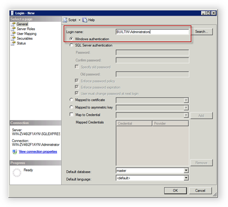
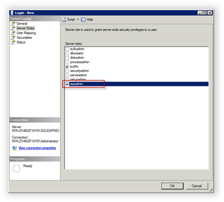
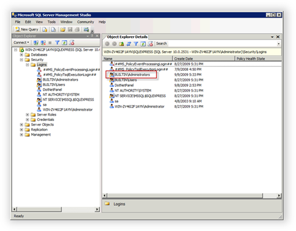

Configuring SQL Server
Translations:
This topic describes how to configure an instance of SQL Server to work with WebsitePanel. In order to manage SQL Server from WebsitePanel using Windows Authentication (where account credentials to access SQL Server instance are not stored in the WebSitePanel database), you must add a Windows Administrators group to the sysadmin role in SQL Server.
Adding the "Administrators" group to Server Administrators
Note You can skip this step if you are installing the WebSitePanel Standalone Setup package, because the WSPServer account will be added into the sysadmin group automatically by the WSP Installer.
Open SQL Server Management Studio, right-click Security, select the Logins node, and then select New Login. In the New Login dialog box, enter "BUILTIN\Administrators" for Login name.

Switch to the Server Roles tab, select the sysadmin role and then click OK.

The new group is added.

Configuring SQL Server to Accept External Connections
In order to enable SQL Server Express installed on the server to accept external connections via TCP/IP, follow the instructions in the following KnowledgeBase article:
http://support.microsoft.com/kb/914277
This article applies to both SQL Server 2005 and SQL Server 2008.